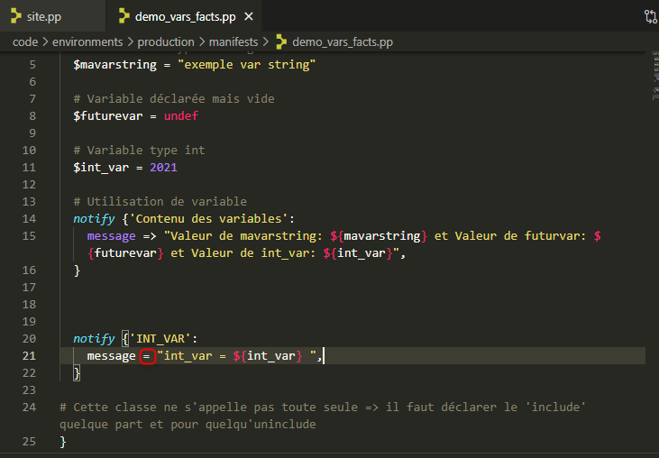
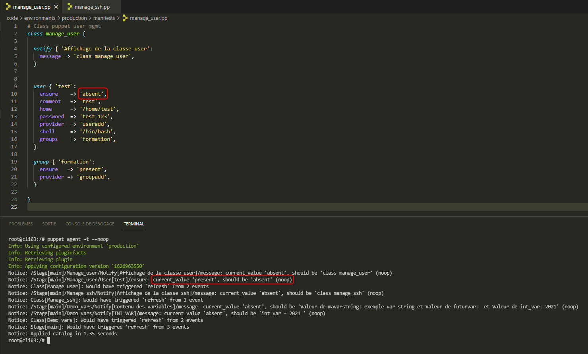

2021-07-21
Pierre SABLE Formateur
Découvrez notre webTV : http://www.dawan.tv
Document: Puppet.pdf
Ansible et Puppet peuvent être utlisés tous les deux dans un même SI.
Il ont des fonctionnalitées, utilisations et résultats différents qui peuvent être complémentaires.
Line: https://foxutech.com/differences-between-ansible-and-puppet/
Lien: Puppet-officiel.pdf
Les fichiers de configurations sont écrits en DSL Ruby: https://puppet.com/blog/ruby-dsl/
On se connecte dans la VM: vagrant ssh ppmaster.formation.lan
Puis on vérifie l’installation de Puppet:
vagrant@ppmaster:~$ apt list | grep puppet
WARNING: apt does not have a stable CLI interface. Use with caution in scripts.
elpa-puppet-mode/focal 0.3+132.g7dee1b5-2 all
etherpuppet/focal 0.3-3.1 amd64
fusiondirectory-plugin-puppet-schema/focal 1.3-2 all
fusiondirectory-plugin-puppet/focal 1.3-2 all
libpuppetlabs-http-client-clojure/focal 0.9.0-1 all
libpuppetlabs-i18n-clojure/focal 0.8.0-1 all
libpuppetlabs-ring-middleware-clojure/focal 1.0.0-2 all
librarian-puppet-simple/focal 0.0.5-3 all
librarian-puppet/focal 3.0.0-1 all
mcollective-plugins-puppetca/focal 0.0.0~git20120507.df2fa81-0ubuntu2 all
mcollective-plugins-puppetd/focal 0.0.0~git20120507.df2fa81-0ubuntu2 all
mcollective-plugins-puppetral/focal 0.0.0~git20120507.df2fa81-0ubuntu2 all
puppet-agent/focal 7.9.0-1focal amd64 [upgradable from: 7.8.0-1focal]
puppet-beaker/focal 4.1.0-1 all
vagrant@ppmaster:~$ docker ps
CONTAINER ID IMAGE COMMAND CREATED STATUS PORTS NAMES
2d380b379ea2 puppet/centos:1.0 "tail -f /dev/null" 7 days ago Up 18 hours cli02.formation.lan
e51491507dd1 puppet/debian:1.0 "tail -f /dev/null" 7 days ago Up 18 hours cli01.formation.lan
# Status service puppetserver:
root@ppmaster:~# systemctl status puppetserver.service
● puppetserver.service - puppetserver Service
Loaded: loaded (/lib/systemd/system/puppetserver.service; disabled; vendor preset: enabled)
Active: inactive (dead)
root@ppmaster:~# systemctl start puppetserver.service
root@ppmaster:~# systemctl enable puppetserver.service
Synchronizing state of puppetserver.service with SysV service script with /lib/systemd/systemd-sysv-install.
Executing: /lib/systemd/systemd-sysv-install enable puppetserver
Created symlink /etc/systemd/system/multi-user.target.wants/puppetserver.service → /lib/systemd/system/puppetserver.service.Plus d’infos sur Systemctl: https://opensharing.fr/commandes-linux-systemctl
# Liste de Containers
root@ppmaster:~# docker ps
CONTAINER ID IMAGE COMMAND CREATED STATUS PORTS NAMES
2d380b379ea2 puppet/centos:1.0 "tail -f /dev/null" 7 days ago Up 19 hours cli02.formation.lan
e51491507dd1 puppet/debian:1.0 "tail -f /dev/null" 7 days ago Up 19 hours cli01.formation.lan
# Connexion dans le Container
root@ppmaster:~# docker container exec -it cli01.formation.lan bash
# Liste des paquets "puppet"
root@cli01:/# apt list | grep puppet
puppet-agent/now 7.8.0-1buster amd64 [installed,local]
puppet7-release/now 7.0.0-2buster all [installed,local]Connexion dans la VM ppmaster:
Admin stagiaire@BBG58Y2 MINGW64 ~/FORMATION/Puppet
$ vagrant ssh
Welcome to Ubuntu 20.04.2 LTS (GNU/Linux 5.4.0-73-generic x86_64)
...
vagrant@ppmaster:~$ Dans notre cas le client est: cli02.formation.lan
On se connecte dedans:
On vérifie la communication avec le puppetserver:
[root@cli02 /]# ping puppet
PING puppet (172.16.8.11) 56(84) bytes of data.
64 bytes from puppet (172.16.8.11): icmp_seq=1 ttl=64 time=0.056 ms
64 bytes from puppet (172.16.8.11): icmp_seq=2 ttl=64 time=0.049 ms
^C
--- puppet ping statistics ---
2 packets transmitted, 2 received, 0% packet loss, time 4ms
rtt min/avg/max/mdev = 0.049/0.052/0.056/0.008 msCréation du certificat de l’agent Puppet:
[root@cli02 /]# /opt/puppetlabs/bin/puppet agent -t
Info: Creating a new RSA SSL key for cli02.formation.lan
Info: csr_attributes file loading from /etc/puppetlabs/puppet/csr_attributes.yaml
Info: Creating a new SSL certificate request for cli02.formation.lan
Info: Certificate Request fingerprint (SHA256): DA:CC:92:21:3F:33:43:74:5D:E2:C0:FE:30:93:06:85:54:4D:E8:64:65:82:D1:9F:FA:61:35:61:E0:22:AB:FA
Info: Certificate for cli02.formation.lan has not been signed yet
Couldn't fetch certificate from CA server; you might still need to sign this agent's certificate (cli02.formation.lan).
Exiting now because the waitforcert setting is set to 0.Vérifier et signer le requete de signature de certificat côté puppetserver:
root@ppmaster:~# puppetserver ca list
Requested Certificates:
ppmaster.home (SHA256) EF:F4:48:8D:7D:7B:B6:86:FB:DD:CD:CE:07:E8:D7:FD:E0:B2:E7:4C:D4:18:FE:EC:E9:77:04:81:A9:9D:D8:B8
cli02.formation.lan (SHA256) DA:CC:92:21:3F:33:43:74:5D:E2:C0:FE:30:93:06:85:54:4D:E8:64:65:82:D1:9F:FA:61:35:61:E0:22:AB:FA
cli01.formation.lan (SHA256) DD:CE:16:9A:F1:B4:EF:4F:C9:C8:4E:34:F9:2E:B9:3E:76:E7:1C:5E:63:9E:0E:9A:4E:66:AB:B4:79:A9:B2:2Droot@ppmaster:~# puppetserver ca sign --certname cli01.formation.lan
Successfully signed certificate request for cli02.formation.lanRedéclencher l’agent pour appliquer le catalogue:
[root@cli02 /]# /opt/puppetlabs/bin/puppet agent -t
Info: csr_attributes file loading from /etc/puppetlabs/puppet/csr_attributes.yaml
Info: Creating a new SSL certificate request for cli02.formation.lan
Info: Certificate Request fingerprint (SHA256): DA:CC:92:21:3F:33:43:74:5D:E2:C0:FE:30:93:06:85:54:4D:E8:64:65:82:D1:9F:FA:61:35:61:E0:22:AB:FA
Info: Downloaded certificate for cli02.formation.lan from https://puppet:8140/puppet-ca/v1
Info: Using configured environment 'production'
Info: Retrieving pluginfacts
Info: Retrieving plugin
Info: Caching catalog for cli02.formation.lan
Info: Applying configuration version '1626872380'
Info: Creating state file /opt/puppetlabs/puppet/cache/state/state.yaml
Notice: Applied catalog in 0.02 secondsPour afficher les certificats en attente de signature:
root@ppmaster:~# ls /etc/puppetlabs/puppetserver/ca/requests/
cli01.formation.lan.pem cli02.formation.lan.pem ppmaster.home.pemPour afficher les certificats signés:
Node : serveur ou poste de travail administré par Puppet
Site : ensemble des noeuds gérés par le Puppet Master
Resource : objet que Puppet peut manipuler
Classe : moyen dans Puppet de séparer des morceaux de code
Module : unité de code Puppet qui est réutilisable et pouvant être partagé
Facter : librairie multi-plateforme qui fournit à Puppet sous forme de variables les informations propres au système (nom, adresse ip, système d’exploitation, etc.)
Manifest : regroupe un ensemble de ressource.
Catalog : ensemble des classes de configuration à appliquer à un nœud
Traduction de configurations vers une syntaxe Puppet:
# user: root
root@cli01:/# /opt/puppetlabs/bin/puppet resource user root
user { 'root':
ensure => 'present',
comment => 'root',
gid => 0,
home => '/root',
password => '*',
password_max_age => 99999,
password_min_age => 0,
password_warn_days => 7,
provider => 'useradd',
shell => '/bin/bash',
uid => 0,
}# Fichier /etc/profile
root@cli01:/# /opt/puppetlabs/bin/puppet resource file /etc/profile
file { '/etc/profile':
ensure => 'file',
content => '{sha256}b8ffd2c97588047e1cea84b7dfdb68bfde167e2957f667ca2b6ab2929feb4f49',
ctime => '2021-07-13 15:37:30 +0000',
group => 0,
mode => '0644',
mtime => '2016-03-04 11:00:00 +0000',
owner => 0,
provider => 'posix',
type => 'file',
}On peut ainsi “puppetiser” des configurations 😜
La ressource est le concept clé de puppet. Elle représente de manière abstraite tout objet concret géré sur la machine.
Dans ce travail pratique nous allons:
être connecté sur votre VM
Nous allons utiliser la commande puppet resource afin de comprendre la correspondance entre le code puppet et l’état de la machine.
Taper la commande puppet help et prendre connaissance de la sortie
Taper la commande puppet help resource
Utiliser la commande adéquate pour lister les types de ressources disponibles
root@cli01:/# puppet describe --list
These are the types known to puppet:
augeas - Apply a change or an array of changes to the ...
cron - Installs and manages cron jobs
exec - Executes external commands
file - Manages files, including their content, owner ...
filebucket - A repository for storing and retrieving file ...
group - Manage groups
host - Installs and manages host entries
mount - Manages mounted filesystems, including puttin ...
notify - Sends an arbitrary message, specified as a st ...
package - Manage packages
resources - This is a metatype that can manage other reso ...
schedule - Define schedules for Puppet
scheduled_task - Installs and manages Windows Scheduled Tasks
selboolean - Manages SELinux booleans on systems with SELi ...
selmodule - Manages loading and unloading of SELinux poli ...
service - Manage running services
ssh_authorized_key - Manages SSH authorized keys
sshkey - Installs and manages ssh host keys
stage - A resource type for creating new run stages
tidy - Remove unwanted files based on specific crite ...
user - Manage users
whit - Whits are internal artifacts of Puppets curr ...
yumrepo - The client-side description of a yum reposito ...
zfs - Manage zfs
zone - Manages Solaris zones
zpool - Manage zpoolsUtiliser la commande puppet pour représenter la ressource de type user du user root présent su la machine
Ecrire la définition d’une resource user dans un fichier manifest : manage_user.pp
Appliquer le manifest localement (standalone)
root@cli01:/# puppet apply manage_user.pp
Notice: Compiled catalog for cli01.formation.lan in environment production in 0.02 seconds
Notice: /Stage[main]/Main/User[test]/ensure: created
Notice: Applied catalog in 0.11 secondsuser { 'test':
ensure => 'present',
comment => 'test',
home => '/home/test',
password => 'test 123',
provider => 'useradd',
shell => '/bin/bash',
groups => 'formation',
}user { 'test':
ensure => 'present',
comment => 'test',
home => '/home/test',
password => 'test 123',
provider => 'useradd',
shell => '/bin/bash',
groups => 'formation',
}
group { 'formation':
ensure => 'present',
provider => 'groupadd',
}Puppet ne fonctionne pas de manière séquentielle comme Ansible.
Le manifest est compilé avant d’être lancé !
[root@cli02 /]# puppet agent -t
Info: Using configured environment 'production'
Info: Retrieving pluginfacts
Info: Retrieving plugin
Info: Caching catalog for cli02.formation.lan
Info: Applying configuration version '1626879808'
Notice: /Stage[main]/Main/Group[formation]/ensure: created
Notice: /Stage[main]/Main/User[test]/ensure: created
Notice: Applied catalog in 0.15 secondsArchitecture des fichiers de configuration:
vagrant@ppmaster:~$ tree /etc/puppetlabs/code/
/etc/puppetlabs/code/
├── environments
│ └── production
│ ├── data
│ ├── environment.conf
│ ├── hiera.yaml
│ ├── manifests
│ └── modules
└── modulesroot@ppmaster:/etc/puppetlabs# docker ps
CONTAINER ID IMAGE COMMAND CREATED STATUS PORTS NAMES
c3f83cf51e9c bilbloke/puppet-systemd:1.0 "/lib/systemd/systemd" 4 minutes ago Up 4 minutes cli03.formation.lan
2d380b379ea2 puppet/centos:1.0 "tail -f /dev/null" 8 days ago Up 40 hours cli02.formation.lan
e51491507dd1 puppet/debian:1.0 "tail -f /dev/null" 8 days ago Up 40 hours cli01.formation.lanroot@cli03:/# . /etc/profile
root@cli03:/# puppet agent -t
Info: csr_attributes file loading from /etc/puppetlabs/puppet/csr_attributes.yaml
Info: Creating a new SSL certificate request for cli03.formation.lan
Info: Certificate Request fingerprint (SHA256): 43:9B:01:ED:43:8E:91:9B:21:F7:2E:62:10:32:4D:5A:6F:CE:25:34:C1:F5:8D:45:37:2B:75:CA:9A:F7:7E:77
Info: Certificate for cli03.formation.lan has not been signed yet
Couldn't fetch certificate from CA server; you might still need to sign this agent's certificate (cli03.formation.lan).
Exiting now because the waitforcert setting is set to 0.root@ppmaster:/etc/puppetlabs# ll puppetserver/ca/requests/
total 16
drwxr-x--- 2 puppet puppet 4096 Jul 22 08:13 ./
drwxr-x--- 4 puppet puppet 4096 Jul 21 12:56 ../
-rw-r--r-- 1 puppet puppet 1598 Jul 22 08:13 cli03.formation.lan.pemroot@ppmaster:/etc/puppetlabs# puppetserver ca sign --certname cli03.formation.lan
Successfully signed certificate request for cli03.formation.lanroot@ppmaster:/etc/puppetlabs# ll puppetserver/ca/signed/
total 24
drwxr-x--- 2 puppet puppet 4096 Jul 22 08:21 ./
drwxr-x--- 4 puppet puppet 4096 Jul 22 08:21 ../
-rw-r--r-- 1 puppet puppet 2004 Jul 21 12:56 cli01.formation.lan.pem
-rw-r--r-- 1 puppet puppet 2004 Jul 21 12:56 cli02.formation.lan.pem
-rw-r--r-- 1 puppet puppet 2004 Jul 22 08:21 cli03.formation.lan.pem
-rw-r--r-- 1 puppet puppet 2057 Jul 21 10:30 ppmaster.formation.lan.pemroot@cli03:/# puppet agent -t
Info: Using configured environment 'production'
Info: Retrieving pluginfacts
Info: Retrieving plugin
Info: Caching catalog for cli03.formation.lan
Info: Applying configuration version '1626942547'
Notice: Applied catalog in 0.04 secondsArchitecture des fichiers:
root@ppmaster:/etc/puppetlabs/code# tree environments/
environments/
└── production
├── data
├── environment.conf
├── hiera.yaml
├── manifests
│ ├── manage_ssh.pp
│ ├── manage_user.pp
│ └── site.pp
└── modulesDans le fichier site.pp:
# Manifest applied to 'cli03.formation.lan'
node 'cli03.formation.lan' {
include ::manage_user
include ::manage_ssh
}
# Manifest applied by default for nodes not-declared above
node default {
include ::manage_user
}On lance la commande: puppet agent -t :
root@cli01:/# puppet agent -t
Info: Using configured environment 'production'
Info: Retrieving pluginfacts
Info: Retrieving plugin
Info: Caching catalog for cli01.formation.lan
Info: Applying configuration version '1626957021'
Notice: class manage_user
Notice: /Stage[main]/Manage_user/Notify[Affichage de la classe user]/message: defined 'message' as 'class manage_user'
Notice: Applied catalog in 0.04 seconds[root@cli02 /]# puppet agent -t
Info: Using configured environment 'production'
Info: Retrieving pluginfacts
Info: Retrieving plugin
Info: Caching catalog for cli02.formation.lan
Info: Applying configuration version '1626957025'
Notice: class manage_user
Notice: /Stage[main]/Manage_user/Notify[Affichage de la classe user]/message: defined 'message' as 'class manage_user'
Notice: Applied catalog in 0.05 secondsroot@cli03:/# puppet agent -t
Info: Using configured environment 'production'
Info: Retrieving pluginfacts
Info: Retrieving plugin
Info: Caching catalog for cli03.formation.lan
Info: Applying configuration version '1626957016'
Notice: class manage_user
Notice: /Stage[main]/Manage_user/Notify[Affichage de la classe user]/message: defined 'message' as 'class manage_user'
Notice: class manage_ssh
Notice: /Stage[main]/Manage_ssh/Notify[Affichage de la classe ssh]/message: defined 'message' as 'class manage_ssh'
Notice: Applied catalog in 1.25 secondsYep All Good !
Les 3 clients récupères bien les manifests qui leurs sont associées.Permet de vérifier l’intégrité du code:
Dans le fichier demo_vars_facts.pp on modifie pour générer une erreur:

root@ppmaster:/etc/puppetlabs/code# puppet parser validate .
Error: Could not parse for environment production: Syntax error at '=' (file: /vagrant/code/environments/production/manifests/demo_vars_facts.pp, line: 21, column: 13)On créer un fichier test.pp dans lequel on dupplique la class demo_vars:
Résultat du parser validate:
root@ppmaster:/etc/puppetlabs/code# puppet parser validate .
Error: Class 'demo_vars' is already defined (file: /vagrant/code/environments/production/manifests/demo_vars_facts.pp, line: 2); cannot redefine (file: /vagrant/code/environments/production/manifests/test.pp,
line: 1)L’option --noop correspond à un –dry-run. Cela permet de vérifier les actions qui seront réalisées, sans les appliquées.
On change dans le fichier manage_ssh.pp le status de l’utilisateur en absent
On lance la commande: puppet agent -t --noop sur le client03:

Sur le client:
root@cli03:/# puppet facts | head -10
{
"os": {
"distro": {
"codename": "buster",
"description": "Debian GNU/Linux 10 (buster)",
"release": {
"full": "10.10",
"major": "10",
"minor": "10"
},Dans le fichier demo_vars_facts.pp on créer la classe demo_vars et on teste les différents types de variables.
# Variable de type 'String'
$mavarstring = "exemple var string"
# Variable déclarée mais vide
$futurevar = undef
# Variable type int
$int_var = 2021
# Utilisation de variable
notify {'Contenu des variables':
message => "Valeur de mavarstring: ${mavarstring} et Valeur de futurvar: ${futurevar} et Valeur de int_var: ${int_var}",
}
notify {'INT_VAR':
message => "int_var = ${int_var} ",
}Notice: Valeur de mavarstring: exemple var string et Valeur de futurvar: et Valeur de int_var: 2021
Notice: /Stage[main]/Demo_vars/Notify[Contenu des variables]/message: defined 'message' as 'Valeur de mavarstring: exemple var string et Valeur de futurvar: et Valeur de int_var: 2021'
Notice: int_var = 2021
Notice: /Stage[main]/Demo_vars/Notify[INT_VAR]/message: defined 'message' as 'int_var = 2021 '# Création d'un tableau
$tableau = ['puppet', '7.9.0']
notify {'Tableau':
message => " Programme: ${tableau[0]} et Version: ${tableau[1]} \n",
}# Creation d'un hash (dictionnaire)
$hash = [
{
'name' => 'user1',
'home' => '/prd/user1'
},
{
'name' => 'user2',
'home' => '/dev/user2'
}
]
notify {'Hash':
message => "${hash[0]['home']}",
}Notice: /prd/user1
Notice: /Stage[main]/Demo_vars/Notify[Hash]/message: defined 'message' as '/prd/user1' # Afficher l'OS family et la Distribution
notify {'Utilisation de FACTS':
message => "Famille: ${facts['os']['family']} et Distribution: ${facts['os']['distro']['codename']} ",
}Notice: Famille: Debian et Distribution: buster
Notice: /Stage[main]/Demo_vars/Notify[Utilisation de FACTS]/message: defined 'message' as 'Famille: Debian et Distribution: buster '